The tile art lives in ONE place: bga/img/tiles/. These are the exact files BGA shows and print uses. Each tile carries its own resource, building sockets and roads; BGA adds nothing on top. The server deals from bga/modules/php/tileset.php (generated with them).
Maximum on the table (4-6 players): 37 land tiles + 12 port tiles = 49 hexes. 2-3 players: 19 land + 4-6 ports. Home tiles replace 1 outer-ring tile per player.
| Group | 2-3 players | 4-6 players |
|---|---|---|
| Centre (level 1) | 1 | 1 |
| Level 2 (ring 1) | 6 | 6 |
| Level 3 (ring 2) | 12 | 12 |
| Level 4 (ring 3) | - | 18 |
| Land total | 19 | 37 |
| Port tiles (2 per player) | 4-6 | 8-12 |
Port tiles come in 8 good/discount types x 6 sides (the sea side decides which two edges have roads), 48 files; the table uses 2 per player. Physical print set: 37 land + 6 home + 12 ports, rotate a port to its side. Coin-plus icon = pays 3 more when you sell it, down arrow = 2 cheaper to buy. Four land tiles hold two resources (iron and crystal): the Rich Land missions need them.
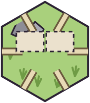
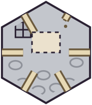
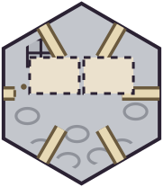
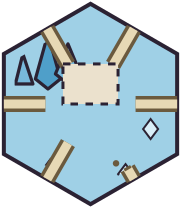
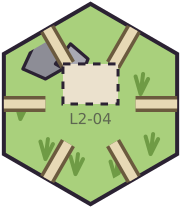
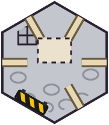
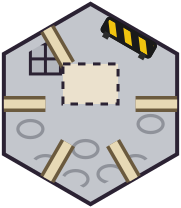
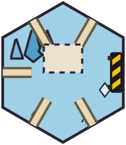
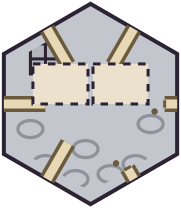
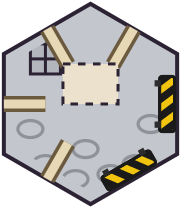
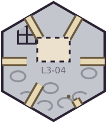
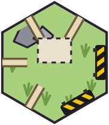
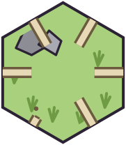
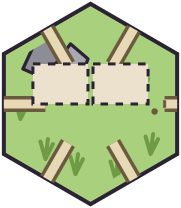
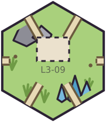
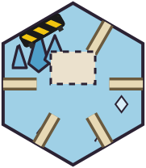
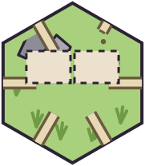
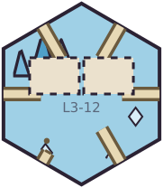
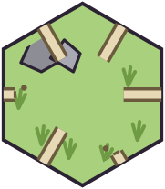
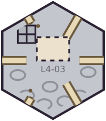
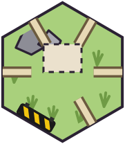
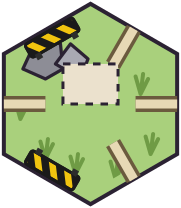
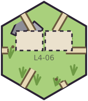
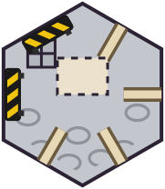
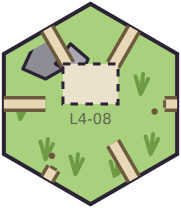
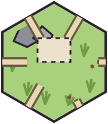
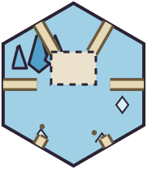
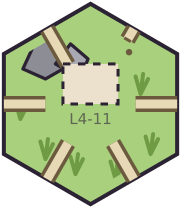
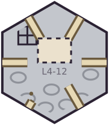
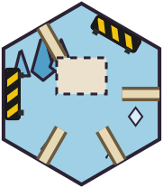
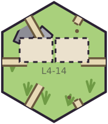
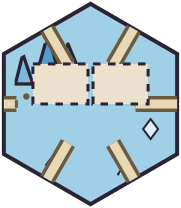
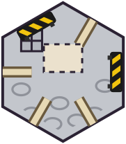
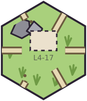
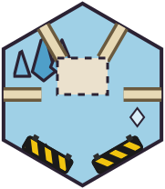
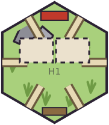
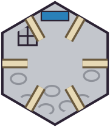
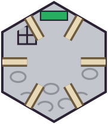
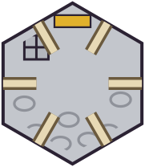
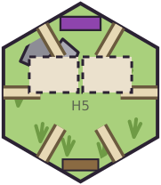
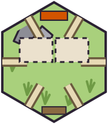
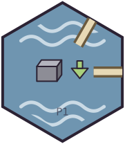
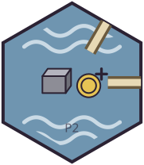
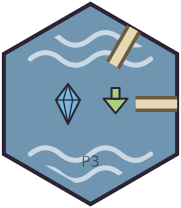
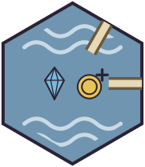
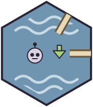
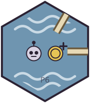
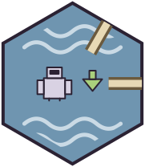
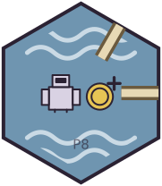